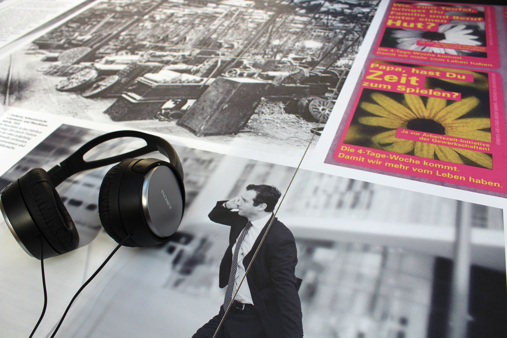
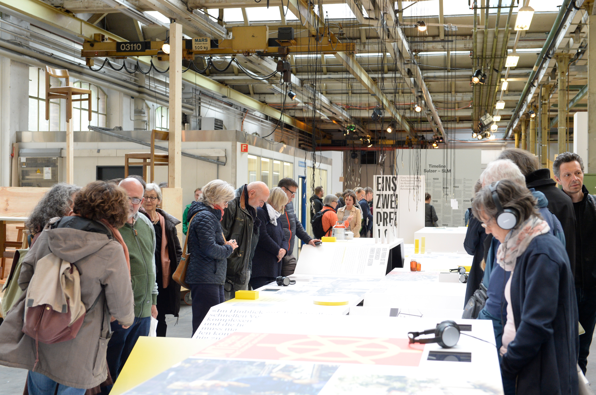
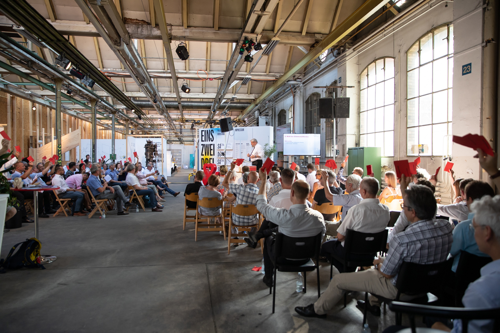

Modell einer Textilmaschine
Modell einer Sulzer-Webmaschine aus dem frühen 20. Jahrhundert — Zeugnis der industriellen Blütezeit Winterthurs.

Der Historische Verein Winterthur bewahrt Objekte, Dokumente und Erinnerungsstücke zur Stadtgeschichte — von der Industriearbeit bis zum Bürgerleben.

Modell einer Sulzer-Webmaschine aus dem frühen 20. Jahrhundert — Zeugnis der industriellen Blütezeit Winterthurs.

Handkolorierter Plan mit den damals neuen Industriearealen und dem wachsenden Stadtkern.

Möbel und Gebrauchsgegenstände aus dem ehemaligen Bürgerhaus — Alltagskultur einer Winterthurer Familie.
Eisenhelm aus dem Bestand Schloss Mörsburg — eines der ältesten Objekte der Vereinssammlung.
Persönliche Utensilien eines Sulzer-Angestellten mit Gravur und Firmenaufkleber — Biografie in einem Objekt.
Gruppenfoto der Belegschaft einer Winterthurer Maschinenfabrik — Teil der fotografischen Sammlung des Vereins.
Ein grosser Teil der Sammlung ist online recherchierbar — über das Kulturerbe-Portal des Kantons Zürich und die MUSE-Datenbank.
Sammlung im Kulturerbe-Portal durchsuchen →